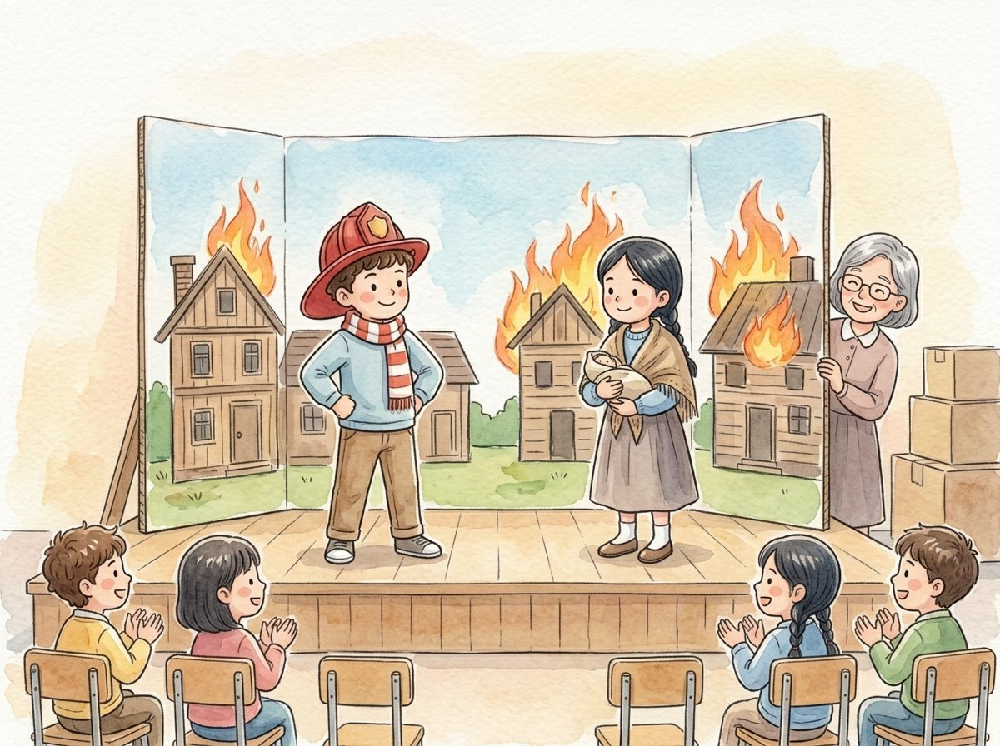

2do grado · Estudios sociales · SS.2.H.2
El gran incendio, contado por todos
Un cuento sobre cómo distintas personas pueden vivir el mismo suceso de maneras diferentes.
Palabras clave que vas a aprender
Toca una palabra verde para ver qué significa.
El cuento
La maestra Ríos les contó a sus alumnos un muy importante de la historia de Chicago: el Gran Incendio de 1871. Un suceso es algo importante que pasó en un momento determinado.
Hace más de 150 años, muchas casas de Chicago eran de madera, y ese otoño había sido muy seco. Una noche de octubre empezó un fuego en un establo. El viento fuerte lo extendió, y la ciudad ardió durante casi dos días. Muchas familias perdieron sus casas.
—Hoy vamos a mirar este suceso desde distintas —dijo la maestra—. Una perspectiva es la forma en que una persona ve algo, según lo que vivió y lo que sentía. Cada niño iba a hacer el papel de una persona de esa época.
Israel fue un bombero. —Corríamos de un incendio a otro —contó—. ¡Estábamos muy cansados, pero no podíamos parar! Para el bombero, el incendio fue una lucha larga y difícil.
Lucía fue una niña cuya familia perdió su casa. —Salimos corriendo hacia el lago con lo poco que pudimos cargar —dijo—. Esa noche dormimos en la orilla. Para esa familia, el incendio fue una noche de miedo y de tristeza. La niña era una : alguien que vio el suceso con sus propios ojos.
Otra compañera hizo el papel de la señora Catherine O'Leary, en cuyo establo empezó el fuego. Los periódicos de la época contaron que su vaca había tumbado una lámpara, pero nadie lo vio. Era un : algo que la gente repite sin saber si es verdad. Muchos años después, la ciudad de Chicago reconoció que culparla había sido .
Por último, otro niño fue un constructor. —Después del fuego, todos ayudamos a la ciudad —dijo—. Esta vez usamos ladrillo y piedra, que no se queman tan fácilmente. Reconstruir es volver a construir lo que se destruyó.
Al terminar, la maestra preguntó qué habían aprendido. —Que un mismo suceso se puede contar de muchas maneras —dijo Lucía—. Para entenderlo bien, hay que escuchar a todas las personas que lo vivieron.
Glosario
- suceso
- Algo importante que pasó en un momento determinado.
- perspectiva
- La forma en que una persona ve algo, según lo que vivió y lo que sentía.
- testigo
- Una persona que vio un suceso con sus propios ojos.
- rumor
- Algo que la gente repite de boca en boca sin saber si es verdad.
- injusto
- Que no es justo: que trata mal a alguien que no lo merece.
- reconstruir
- Volver a construir lo que se destruyó.
Preguntas
Elige la respuesta correcta. Si te equivocas, el cuento te muestra dónde está la respuesta.
-
Pregunta A. ¿Qué es una perspectiva?
Una perspectiva es la forma en que una persona ve algo, según lo que vivió y lo que sentía.
-
Pregunta B. ¿Cómo vivió el incendio el bombero?
Para el bombero, el incendio fue una lucha larga y difícil.
-
Pregunta C. ¿Cómo vivió el incendio la familia que perdió su casa?
Para esa familia, el incendio fue una noche de miedo y de tristeza.
-
Pregunta D. ¿Por qué fue injusto culpar a la señora O'Leary?
Lo de la vaca era un rumor: nadie lo vio. Por eso culparla fue injusto.